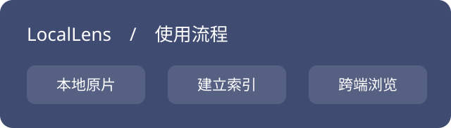

LocalLens
不搬动原文件，也能把电脑里的照片和视频整理成可检索的媒体库。

适合谁
希望自己保管原片，又想在不同设备上浏览媒体的人。
如何解决
Windows 端为选定文件夹建立本地索引、缩略图和虚拟分类；Android 设备通过局域网配对浏览。
不搬动原文件，也能把电脑里的照片和视频整理成可检索的媒体库。

希望自己保管原片，又想在不同设备上浏览媒体的人。
Windows 端为选定文件夹建立本地索引、缩略图和虚拟分类；Android 设备通过局域网配对浏览。